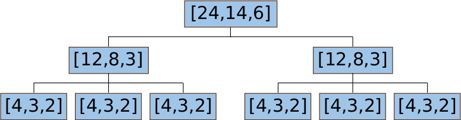
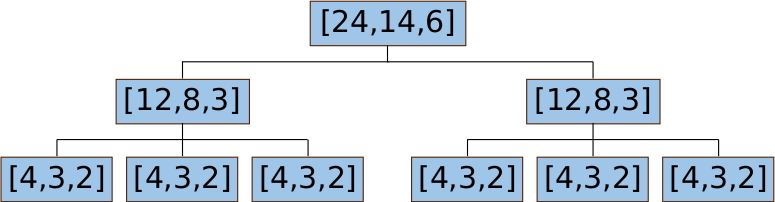

This article deals with the reliable and efficient storage of ‘Big Data’, by which is meant the vast quantities of data that are stored in data centers worldwide. Given that storage units are prone to failure, to protect against data loss, data pertaining to a data file is stored in distributed and redundant fashion across multiple storage units. While replication was and continues to be commonly employed, the explosive growth in amount of data that is generated on a daily basis, has forced the industry to increasingly turn to erasure codes such as the Reed-Solomon code. The reason for this is that erasure codes have the potential to keep to a minimum, the storage overhead required to ensure a given level of reliability. There is also need for storing data such that the system can recover efficiently from the failure of a single storage unit. Conventional erasure-coding techniques are inefficient in this respect. To address this situation, coding theorists have come up with two new classes of erasure codes known respectively as regenerating codes and locally recoverable codes. These codes have served both to address the needs of industry as well as enrich coding theory by adding two new branches to the discipline. This article provides an overview of these exciting new developments, from the (somewhat biased) perspective of the authors.
The setting of the work on developing erasure codes for the storage of Big Data is that of a large data center. The total amount of data stored in 2018 across data centers worldwide, is estimated to be in excess of $1400$ exabytes [1]. These centers are very expensive to build and operate. For example, the NSA data center in the US is estimated to have cost several billion dollars to build, consume about 65MW of power each year and use over a million gallons of water per day [2]. Thus while arguably, the most important consideration in data storage is that of protection against data loss, given the explosive growth in the amount of data generated and the costs involved in storing such data, minimizing storage overhead is an important second consideration. Yet another consideration, that has recently risen in importance, is that of efficiently handling the commonplace occurrence of the failure of an individual storage unit. The focus of this article is on identifying efficient means of storing data while keeping all three considerations in mind. We note as a disclaimer, that the article is not intended to be an unbiased survey of the discipline, as the article emphasizes those aspects of the discipline to which the authors have had greater contribution. A more detailed and balanced coverage of the topic can be found in the recent survey article, also by the authors [3].
The key strategy adopted to protect against data loss, given that individual storage units are prone to failure, is to store data pertaining to a single file in distributed and redundant fashion across multiple storage units [3]. The simplest means of introducing redundancy is replication of the data file, with triple replication being in common use [4], see Figure 1.

A more efficient option is to use an $[n,k]$ erasure code. Figure 2 shows the procedure for encoding data using an
erasure code. In an $[n,k]$ erasure code, the data file is first split into $k$ fragments. To this, an additional $m=(n-k)$ redundant fragments are added making for a total of $n$ fragments. Each fragment is stored on a different storage unit. Within the class of erasure codes, maximum distance separable codes (MDS) are the most efficient in terms of offering reliability for a given amount of storage overhead. An $[n,k]$ MDS code has the following defining property. The entire data file can be recovered if one has access to any collection of $k$ fragments. We will refer to this as the ‘any $k$ of $n$’ property. Thus, an $[n,k]$ MDS code can recover from the failure of any $\leq (n-k)$ fragments. To protect against the failure of any $\ell$ nodes, a replication code must create $(\ell+1)$ replicas, resulting in a storage overhead of $(\ell+1)$. In contrast, the storage overhead of an MDS code that is resilient against $\ell$ failures has overhead $\frac{n}{(n-\ell)}$. For example, with $\ell=2$ and $n=6$, the storage overheads of the two schemes, replication and erasure coding, are respectively given by $3$ and $1.5$.
The best known of all MDS codes is the Reed-Solomon (RS) code [5]. The symbol alphabet of an RS code is a finite field $\fq$ (e.g. Ch.3 [6]). A finite field $\fq$ is a collection of $q$ elements together with two operations, addition and multiplication that obey the rules we are accustomed to such as $a(bc)=(ab)c=abc$, $a+b=b+a$, $a(b+c)=ab+ac$ etc. As an example, a finite field $\mathbb{F}_3$ of size $q=3$ is composed of the elements $\{0,1,2\}$ along with two operations: addition $\! \! \pmod{3}$ and multiplication $\! \! \pmod{3}$. The corresponding addition and multiplication tables are presented in Figure 3.
\begin{eqnarray*} \begin{array}{c|ccc} & 0 & 1 & 2 \\ \hline 0 & 0 & 1 & 2 \\ 1 & 1 & 2 & 0 \\ 2 & 2 & 0 & 1 \end{array} & & \begin{array}{c|ccc} & 0 & 1 & 2 \\ \hline 0 & 0 & 0 & 0 \\ 1 & 0 & 1 & 2 \\ 2 & 0 & 2 & 1 \end{array} \end{eqnarray*}
Similar addition and multiplication tables can be generated for finite fields of size $q$ where $q$ is a prime number such as $2,3,5,7,\cdots$. In general, finite fields of size $q$ exist whenever $q$ can be expressed as power of a prime number $p$, i.e., $q=p^e$ for some positive integer $e$. However, the arithmetic there is more involved. For our purposes, it suffices to imagine that we are working in some suitably large finite field. The explanation from here on is agnostic to the inner workings of operations in the finite field.
We explain in brief, the construction of an $[n,k]$ RS code. Let the symbols $(a_0,a_1,\cdots,a_{k-1})$, each taking on values in a finite field $\fq$, represent the $k$ message symbols. Let $(x_0,x_1,\cdots,x_{n-1})$ be an arbitrary collection of $n$ distinct elements from $\fq$. Let the polynomial $f(x)$ be defined by:
\begin{eqnarray*} f(x) & = & \sum_{i=0}^{k-1} a_i \ \prod^{k-1}_{\begin{array}{c} j=0 \\ j \neq i \end{array}} \frac{(x-x_j)}{(x_i-x_j)} \ \ := \ \sum_{i=0}^{k-1} b_i x^i . \end{eqnarray*}
Then clearly, $f$ is a polynomial of degree $(k-1)$ such that
\begin{eqnarray*} f(x_i) \ = \ a_i, & & 0 \leq i \leq (k-1). \end{eqnarray*}
The $n$ code symbols in the RS codeword corresponding to message vector $(a_0,\cdots,a_{k-1})$ are precisely the $n$ values $(f(x_0),f(x_1),\cdots,f(x_{n-1}))$. The $k$ message symbols are the values $f(x_j)$, of $f$ when $f$ is evaluated at $(x_0,x_1,\cdots,x_{k-1})$. The $(n-k)$ redundant symbols of an RS code are the values $\{ f(x_j) \mid k \leq j \leq (n-1) \}$.
The RS code derives its ‘any $k$ of $n$’ property from the fact that the polynomial $f$ (and hence the message symbols $\{a_i =f(x_i) \mid i=0,1,\cdots,k-1\}$) can be determined from knowledge of any $k$ evaluations, simply by solving a nonsingular set of $k$ equations in the $k$ unknown coefficients $\{b_i\}_{i=0}^{k-1}$ as shown below
\begin{eqnarray*} \left[ \begin{array}{c} f(x_{i_1}) \\ f(x_{i_2}) \\ \vdots \\ f(x_{i_k}) \end{array} \right] & = & \underbrace{\left[ \begin{array}{cccc} 1 & x_{i_1}& \cdots & x_{i_1}^{k-1} \\ 1 & x_{i_2} & \cdots & x_{i_2}^{k-1} \\ \vdots & \vdots & \vdots & \vdots \\ 1 & x_{i_k} & \cdots & x_{i_k}^{k-1} \end{array} \right] }_{\begin{array}{c} \text{a Vandermonde matrix} \\ \text{and therefore invertible} \end{array} } \left[ \begin{array}{c} b_0\\ \\ \vdots \\ b_{k-1} \end{array} \right], \end{eqnarray*}
where $i_1, \cdots, i_k$ are $k$ distinct indices in $\{0, \cdots, n-1\}$.
A fairly frequent occurrence in a data center is the failure of a single node (i.e., of a single storage unit). Figure 5 shows the number of single-node failures in a Facebook data center containing $3000$ nodes in all. RS codes are efficient in terms of providing the least possible value of storage overhead. However, the conventional means of recovering from a single-node failure in an MDS code is inefficient (see Figure 6). This is illustrated in Figure 7 which shows the $[n=14,k=10]$ RS code employed by Facebook.
In Figure 7, in order to repair the code symbol in failed node $1$ (similarly, for any other node), the replacement node for node $1$ will contact $10$ other storage units, use their contents in conjunction with the ‘any $10$ out of $14$’ property to reconstruct the RS codeword, and thereby the lost contents of node $1$. This is inefficient in $2$ respects: firstly in terms of the number of nodes contacted (which is $10$ here) and secondly in terms of the total amount of data that is downloaded to restore the contents of a single, failed node. Figure 7 shows that if each failed node stores $100$MB of data, then the total download needed to recover the node is $1$TB, which clearly, is inefficient.
To address this issue, coding theorists came up with two new classes of codes, known respectively as regenerating codes (RGC) [9] and locally recoverable codes (LRC) [10]. LRC also go by the name codes with locality and we will interchangeably use the two terms. These developments have led to the evolution of coding theory in two new directions (see Figure 8). While these developments also resulted in finding improved methods of repairing RS codes, we will not cover them in this survey and point the reader instead, to a representative set of references on this topic [11, 12, 13]. We will also not cover variants of regenerating codes such as the piggybacking framework introduced in [14], the $\epsilon-$MSR framework [15], codes with cooperative repair [16] and fractional-repetition codes [17].


The goal in the case of an RGC is to reduce the amount of data that has to be downloaded to repair a failed node, termed as the repair bandwidth. The aim in the case of an LRC is to minimize the number of helper nodes contacted for repair of a failed node. This is termed as the repair degree.
Each code symbol in an RS code is an element in a finite field. Regenerating codes are codes over a vector alphabet. That is, each code symbol is a vector as opposed to a scalar. This property is key to enabling a regenerating code to achieve savings in repair bandwidth. This is illustrated in the example depicted in Figure 9.
In Figure 9, the setup on the left represents an $[4,2]$ MDS code. The symbols stored in the $4$ nodes are respectively, $A,B,A+B,A+2B$. This makes the code an MDS code. However, to repair a failed node, say the node $1$, that stored $A$, we still have to download $2$ symbols to repair the node. Consider next, the setup on the right. Here the sub-packetization level is $2$, each symbol is replaced by $2$ ‘half-symbols’. Thus $A$ is replaced by $A_1,A_2$, $B$ by $B_1,B_2$. Note that if the data stored in the remaining two parity nodes is as shown in the figure, then node $1$ can be repaired by downloading $3$ half-symbols in place of two full symbols, thereby achieving a reduction in repair bandwidth. Note however, that in the case of the regenerating code, we have contacted all the remaining nodes, $3$ in this case, as opposed to $k=2$ in the case of the MDS code on the left. Thus while regenerating codes reduce the repair bandwidth, they do in general, result in increased repair degree.
A regenerating code is characterized by the parameter set
\begin{eqnarray*} \{(n,k,d), (\alpha,\beta), B, \fq\ \}. \end{eqnarray*}
The parameter $n$ denotes the block length of the code, which is the number of nodes that the data associated with a codeword in the RGC is stored across. Each node stores $\alpha$ symbols over $\fq$. A value of $\alpha=1$ would indicate a scalar code, such as an RS code. Thus $\alpha$ is the level of sub-packetization of the code. The parameter $k$ indicates that the RGC has the ‘any $k$ of $n$’ property. This is illustrated in Figure 10, on the left. Node repair is accomplished by having the replacement of a failed node contact any $d$ of the remaining nodes, with $k \leq d \leq (n-1)$ and download $\beta$ symbols from each of the $d$ helper nodes (see Figure 10, on the right). The parameter $\beta$ is typically much smaller than $\alpha$. $B$ is the size of the file being stored, as measured in the number of $\fq$ symbols. The savings in repair bandwidth comes about since $d \beta < k \alpha $.
A cut-set bound derived from network information-flow considerations [18] gives us the following relationship [9] between code parameters:
\begin{eqnarray*} B & \leq & \sum_{i=0}^{k-1} \min\{\alpha, (d-i)\beta\}. \end{eqnarray*}
Clearly, an RGC that achieves the above bound on file size with equality is an optimal RGC. Turns out that there are many flavours of optimality, in the sense that for a given file size $B$, there can be several values of the parameter pair $(\alpha,\beta)$ for which the bound holds with equality. Two special cases of the above bounds are shown below:
\begin{eqnarray} B & \leq & k \alpha, \label{eq:msr}\\ B & \leq & \sum_{i=0}^{k-1} (d-i)\beta \ = \ kd\beta - \left(\begin{array}{@{}c@{}}k\\ 2\end{array}\right)\beta. \label{eq:mbr} \end{eqnarray}
Codes which achieve the first upper bound are termed as Minimum Storage Regenerating (MSR) codes while those that achieve the second bound with equality are known as Minimum Bandwidth Regenerating (MBR) codes. MSR codes have the advantage of having the least possible storage overhead as they can be shown to belong to the class of MDS codes. MBR codes have the minimum possible repair bandwidth, but are not MDS. The minimum storage overhead of an MBR code is close to the value $2$.
We now present a simple, yet elegant, construction of an MBR code [19]. The parameters of the construction to be described are:
\begin{eqnarray*} \{ (n=5,k=3,d=4), (\alpha=4,\beta=1), B=9, \fq=\mathbb{F}_2 \}. \end{eqnarray*}
The file to be stored consists of a string of $9$ binary digits $\{a_1,a_2,\cdots,a_9\}$. Thus $a_i \in \{0,1\}$. We will use the integer $i$ to represent the $i$th message symbol $a_i$.
Encoding To encode the data, in the first step we add a single parity symbol $P$ as shown in Figure 11, i.e.,
\begin{eqnarray*} a_P & = & a_1+a_2+\cdots+a_{9} \pmod{2}. \end{eqnarray*} Note that the collection \begin{eqnarray*} \{a_i \mid 1 \leq i \leq 9\} \cup \{a_P\}, \end{eqnarray*}
has the ‘any $9$ of $10$ property’, i.e., a missing $10$th symbol can be recovered from the remaining $9$ simply by computing their modulo $2$ sum.

Next, we set up a graph with $5$ nodes so as to form a pentagon and draw all possible edges connecting $2$ nodes of the graph, i.e., form a fully-connected pentagon. The pentagon has ${5 \choose 2}=10$ edges. We place each of the symbols $a_i$ on a distinct edge, see Figure 12.
In the final encoding step, each node in the graph is made to store all the symbols appearing on an edge connected to that node as shown in Figure 12. Thus each node stores $4$ symbols and thus in this contruction, $\alpha=4$. Note that every pair of nodes in the pentagon share in common, precisely one of the symbols $\{a_i \mid 1 \leq i \leq 9\} \cup \{a_P\}$.
Node Repair Let us assume that the node at the top of the pentagon and storing $\{a_2,a_5,a_6,a_P\}$ fails. Then repair is accomplished by the replacement node requesting each of the remaining $4$ nodes to pass on to the replacement node, the symbol it shares in common with that node, see Figure 13 (left). Since each helper node passes on one symbol to aid on the repair of the failed node, it follows that $\beta=1$.

Data Collection Property The data collection property of an RGC requires that the entire data file comprised in this example of $9$ binary symbols, be recoverable by connecting to any $k=3$ nodes. Suppose for example that the nodes storing $\{a_1,a_4,a_9,a_P\}$ and $\{a_3,a_5,a_8,a_9\}$ have failed. Then the data collector is required to recover the entire data file by connecting to the remaining $3$ nodes as shown in Figure 13 (right). The remaining $3$ nodes store a total of $4 \times 3=12$ binary symbols. However, as every pair of nodes shares a symbol in common, only $9$ of these are distinct. Now, as noted earlier, the entire data file can be recovered from any $9$ symbols drawn from the set $\{a_i \mid 1 \leq i \leq 9\} \cup \{a_P\}$ and thus we are done.
In practice there is greatest interest in using a code that has the smallest possible storage overhead. This leads directly to the subclass of MSR codes. MSR codes minimize the repair bandwidth within the class of MDS codes, i.e., within the class of codes having minimum storage overhead. Two other metrics by which a regenerating code is judged from a practical perspective are:
Small Sub-Packetization Level: By this we mean, the least possible value $\alpha$ of sub-packetization. A lower value of $\alpha$ helps reduce or eliminate the phenomenon of fragmented reads. Fragmented reads take place when a storage device has its memory structured in such a way that each time a read takes place, a minimum number of $J$ contiguous symbols are read off the memory. In an RGC, the $\beta$ (or more) symbols accessed from each helper node may not be contiguous, thereby causing the number of symbols accessed to be larger than the number theoretically needed. A small value of sub-packetization helps as one can obtain contiguous reads by operating on several (in the worst case, $J$) codewords at the same time. A large value of $\alpha$ would place a lower bound $\geq J(k \alpha)$ on the amount of data needed to be stored to avoid fragmented reads.
A lower bound on the smallest possible value of the sub-packetization level $\alpha$ of an OA-MSR code with $d=(n-1)$ is given by [20]:
\begin{equation} \alpha \geq r^{\lceil \frac{n-1}{r} \rceil}. \label{eq:sbpl} \end{equation}
An OA-MSR code that achieves the bound in $\eqref{eq:sbpl}$ is said to have optimal sub-packetization level. MSR codes with $d=(n-1)$ while having large repair degree, have the advantage of having the smallest possible repair bandwidth of any MSR code.
There are multiple MSR constructions in the literature. In [21], the authors introduced explicit MSR constructions called Product Matrix codes that have storage overhead $> (2 -\frac{1}{k})$. Multiple constructions that followed this construction are detailed in the survey [3]. However, these constructions lacked one or the other of the desired properties. The Clay (short for coupled-layer) code is an MSR code that is optimal in $4$ respects: it is an MSR code (and hence has both minimum storage overhead and minimum repair bandwidth), it is also OA and has smallest possible level of $\alpha$ (see Figure 14). In a way, the Clay code may be regarded as the culmination of work by many authors towards the construction of an RGC that meets virtually all the requirements of the industry, to the extent that it is possible for an RGC to do so.
The Clay code was independently discovered by $2$ research groups, see [22],[23]. A fundamental transformation used in the construction of the Clay code was first described in [24].
We explain the structure of the Clay code using an example code having parameters:
\begin{eqnarray*} \{ (n=4,k=2,d=3), (\alpha=4,\beta=2), B=8, \fq=\mathbb{F}_4 \ (q=4)\}. \end{eqnarray*}
We will depict the Clay code as a data cube as shown in Figure 15 on the left. The datacube is composed of $16$ small cylinders, each associated with a symbol in $\fq$. A vertical column of $4$ cylinders corresponds to the $4$ symbols contained in a single node (as $\alpha=4$). This code is required to have the following properties:
In the following, we will describe how encoding and node repair take place in a Clay code. We refer the reader to [23] for an explanation as to how data collection is accomplished in the Clay code.
As noted earlier, we will view the Clay code as containing a total of $16$ $\fq$ symbols, each placed at a distinct vertex of a datacube of size $(2\times 2 \times 4)$. In all of the figures that we show, the vertex appears as a small cylinder. We will index each code symbol by the triple
\begin{eqnarray*} (x,y,z) & = & (x,y,(z_0,z_1)), \end{eqnarray*}
where $\{x,y,z_0,z_1\}$ all belong to $\{0,1\}$, as shown in Figure 15. The figure on the left identifies each plane with a value of $z=(z_0,z_1)$, whereas the figure on the right identifies the $(x,y)$ coordinates of each vertex within the example plane $z=(0,1)$.
For the purposes of describing the encoding and repair properties of the Clay code, it is convenient to introduce a second datacube of identical dimensions. We will refer to the datacube representing the Clay code itself as the actual datacube and the second datacube just introduced here, as the virtual datacube. Figure 16 shows the two datacubes, with the virtual datacube on the left appearing in blue and the actual datacube appearing on the right in red. The acronyms PFT and PRT appearing in the figure correspond respectively to the expansions pairwise forward transform and pairwise reverse transform. These terms will shortly be explained.

Across the two datacubes, the symbols corresponding to the red dots in the same location are identical. Within each of the datacubes, the symbols associated with vertices that are not colored red, are paired. Example pairings are identified in Figure 16 in yellow and connected by dashed lines. Thus the symbols $\{U,U^{*}\}$ on the left are paired. So are the symbols $\{C,C^{*}\}$ on the right. The indices of the paired symbols are given in general, by:
\begin{eqnarray*} (x,y,(z_0,z_1)) \Longleftrightarrow (z_y,y,(u_0,u_1))\\ \text{ where $(u_y=x \text{ and } u_i=z_i, i \neq y$).} \end{eqnarray*}
Thus, the two paired symbols share the same $y$ coordinate and the corresponding vertices lie in the same $y$-section of the datacube. The relationship between the pair $\{U,U^{*}\}$ on the left and the pair $\{C,C^{*}\}$ on the right is given by the PFT and PRT as shown below:
\begin{eqnarray*} \underbrace{\left[ \begin{array}{c} C \\ C^{*} \end{array} \right] \ = \ A \left[ \begin{array}{c} U \\ U^{*} \end{array} \right]}_{\text{PFT}}, & \ \ \ & \underbrace{\left[ \begin{array}{c} U \\ U^{*} \end{array} \right] \ = \ A^{-1} \left[ \begin{array}{c} C \\ C^{*} \end{array} \right]}_{\text{PRT}}, \end{eqnarray*}
where $A$ is a nonsingular matrix. The matrix $A$ is required to possess the following additional property: given any two elements in the set $\{U,U^{*},C,C^{*}\}$, the remaining two elements can be derived from them. This is equivalent to saying that the matrix
\begin{eqnarray*} B & = & \left[ \begin{array}{c} I_2 \\ A \end{array} \right], \end{eqnarray*}
should have the property that any two rows of $B$ are linearly independent. Here $I_2$ denotes the $(2 \times 2)$ identity matrix. From this, it follows that given the contents of one datacube, the contents of the other datacube can be fully recovered.
The symbols belonging to the virtual datacube possess an important property: the symbols in any given horizontal plane, corresponding to a fixed value of indexing parameter $z$, form an $[4,2]$ MDS code. This naturally, imposes a constraint on the contents of the actual datacube, and is the only constraint placed (in indirect fashion), on the contents of the actual datacube. We will show how this can be used to encode and carry out node repair.
Encoding is carried out as described in Figure 17. The four rectangles appearing in the figure represent a top aerial view of the actual (in red) and virtual (in blue) datacubes.
Encoding is carried out as per the steps given below (see Figure 17).
Node repair is accomplished by carrying out the $3$-step procedure described below (see Figure 18). Let us assume without loss of generality that node associated to $(x_0,y_0)=(1,0)$ has failed.
Step 3: the symbols in the repair planes and associated to the red dots are the same in the virtual and actual datacubes. Thus we have recovered $2$ of the lost symbols in the failed node (of the actual datacube), namely the symbols associated to vertex sets:
\begin{eqnarray*} ((x,y)=(1,0),z=(1,0)) \\ \text{ and } ((x,y)=(1,0),z=(1,1)) . \end{eqnarray*}
We also have access to the symbol pairs $U,C$ associated to vertex sets
\begin{eqnarray*} ((x,y)=(0,0),z=(1,0))\\ \text{ and } ((x,y)=(0,0),z=(1,1)) . \end{eqnarray*}
Using these, the corresponding symbols $C^*$ can be determined and these are precisely the remaining two symbols in the failed node, namely the symbols associated to vertex sets:
\begin{eqnarray*} ((x,y)=(1,0),z=(0,0))\\ \text{ and } ((x,y)=(1,0),z=(0,1)) . \end{eqnarray*}
This concludes the repair process.

In a joint collaborative effort involving the University of Maryland, NetApp and the Indian Institute of Science, Clay codes have been implemented in an open-source distributed storage system called Ceph [26] and evaluated over an AWS (Amazon Web Services) cluster. This effort can be found described in [25]. It is planned to have the Clay code made available as an erasure code plugin in the upcoming Nautilus release [27] of Ceph. An earlier contribution by the authors to Ceph involved enabling vector-code support in Ceph by introducing the notion of sub-chunk and then enabling Clay code as an erasure-code plugin. The current implementation leaves open the choice of scalar MDS building block, i.e., the code can be realized through any available MDS implementation within Ceph, such as the Jerasure, Intel Storage Acceleration (ISA) and Shingled Erasure Code (SHEC) plugins.
As mentioned in Section 1.3, locally recoverable codes (LRCs), introduced in [10], are aimed at keeping to a low level, the repair degree. A linear code is systematic if the $k$ message symbols are explicitly present among the $n$ code symbols. An $(n,k,r)$ LRC $\calc$ over a field $\fq$ is a systematic $[n,k]$ linear block code having the property that every message symbol $c_t$, $t \in [k]$ can be recovered by computing a linear combination of the form
\begin{eqnarray} c_t & = & \sum_{j \in S_t} a_j c_j , \ \ a_j \in \fq \label{eq:lrc}, \end{eqnarray}
involving at most $r$ other code symbols $c_j, j \in S_t$. Thus the set $S_t$ in the equation above has size at most $r$. The minimum distance of an $(n,k,r)$ LRC must satisfy the bound
\begin{eqnarray*} d_{\min} & \leq & (n-k+1) - \left( \left \lceil \frac{k}{r} \right \rceil -1 \right). \end{eqnarray*}
An LRC whose minimum distance satisfies the above bound with equality is said to be optimal. The class of pyramid codes [28] are an example of a class of optimal LRCs.
Figure 19 shows the $(n=18,k=14,r=7)$ LRC employed in conjunction with Windows Azure [29] and which is related in structure, to the pyramid code. The dotted boxes indicate a collection of symbols that satisfy an overall parity check. This code has minimum distance $4$ which is the same as that of the $[n=9,k=6]$ RS code appearing in Figure 20.
In terms of reliability, the codes are comparable as they both have the same minimum distance $d_{\min}=4$. In terms of repair degree, the two codes are again comparable, having respective repair degrees of $7$ (Azure LRC) and $6$ (RS). The big difference is in the storage overhead, which stands at $\frac{18}{14}=1.29$ in the case of the Azure LRC and $\frac{9}{6}=1.5$ in the case of the $[9,6]$ RS code. This difference has reportedly saved Microsoft millions of dollars [30].
An LRC in which every code symbol can be recovered from a linear combination of at most $r$ other code symbols is called an all-symbol LRC. A construction for optimal all-symbol LRCs can be found in [31]. The codes in the construction may be regarded as subcodes of RS codes. An example is shown in Figure 21. As was noted in Section 1.1, code symbols in an RS code may be regarded as values of a polynomial associated with the message symbols. The construction depicted in Figure 21, is one in which code symbols are obtained by evaluating a subclass of polynomials. This subclass of polynomials has the property that given any code symbol corresponding to the evaluation $f(P_a)$, there exist two other code symbols $f(P_b),f(P_c)$ such that the three values lie on straight line and hence satisfy an equation of the form
\begin{eqnarray*} u_af(P_a)+ u_bf(P_b)+ u_cf(P_c) & = & 0. \end{eqnarray*}
 

Thus this leads to an LRC with $r=2$. This construction can be generalized to any $r$ and the resultant codes turn out to be optimal.
One disadvantage of an LRC is that the idea of an LRC is not scalable. Consider an $[24,14]$ linear code which is made up of the union of $6$ disjoint $[4,3]$ ‘local’ codes (see Figure 22 on the left). These local codes are single parity check codes and ensure that the code has locality $3$. However, if there are $2$ or more erasures within a single local code, then recovery is not possible. Codes with hierarchical locality [32] (see Figure 22 (right)) seek to overcome this by building a hierarchy of local codes to ensure that in the event that a codeword in the lowest level fails, then the local code at the next level can take over. The local codes at higher levels have a minimum distance that permits recovery from more than one erasure.
Hierarchical codes present one method of designing a code with locality that can recover from more than one erasures. There are other approaches as well. Availability codes [33], [34] cater to the situation when a node containing a code symbol that it is desired to access is unavailable as the particular node is busy serving other requests. To handle such situations, an availability code is designed so that the same code symbol can be recovered in multiple ways, as a linear combination of a small subset of the remaining code symbols. The binary product code shown in Figure 23 is one example of an availability code. The symbols $P$ shown in the figure represent respectively either a row or column parity. Here each code symbol can be recovered in $3$ distinct ways: directly from the node storing the code symbol or else by computing the sum of the remaining entries in either the row or the column containing the desired symbol.
The most general approach, and the one that imposes the least constraint in terms of how recovery is to be accomplished is sequential recovery [35], [36]. An example of a code with sequential recovery is shown in Figure 24. In the figure, the numbers correspond to the indices of the $8$ message symbols. The $4$ vertices correspond to the $4$ parity symbols. It can be seen that if message symbols $1$ and $5$ are erased, and one chooses to decode using locality, then one must first decode $5$ before decoding symbol $1$.
There is a class of codes known as codes with local regeneration that provide the benefits of both reduced degree and reduced repair bandwidth (see Figure 25). For details the reader is referred to [37, 38, 39].
Erasure coding for distributed storage enables the reliable storage of very large amounts of data with far less overhead in comparison to replication, while efficiently handling node repairs. Over the past decade, this area has seen extensive research and many exciting codes have been developed as a result. The adoption of LRCs into the Microsoft Azure storage which resulted in significant cost savings, is one of the big success stories along this line of research. Although there are practical implementations of regenerating codes in the literature, regenerating codes are yet to make their way into a production cluster. The planned incorporation of the Clay code into the Nautilus release of Ceph, is an important step in this direction. There remain some open theoretical problems that are also of interest to industry. An example of this is the problem of constructing (vector) MDS codes which are repair bandwidth-efficient, yet offer a low sub-packetization level so as to mitigate the problem of fragmented read.
The authors would like to acknowledge support from the J. C. Bose National Fellowship, the US National Science Foundation under Grant No. 1421848 as well as from the NetApp University Research Fund, a corporate advised fund of the Silicon Valley Community Foundation.